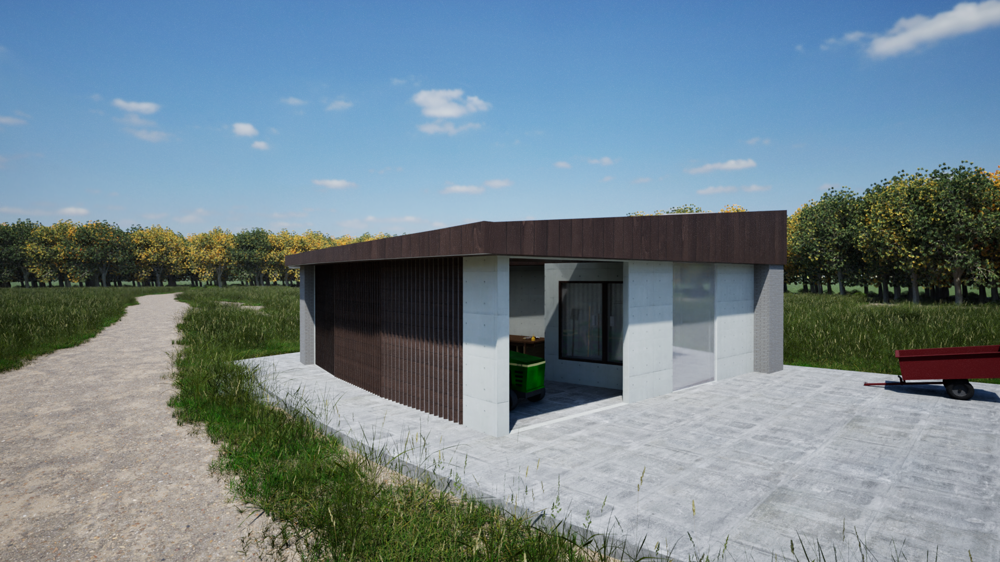
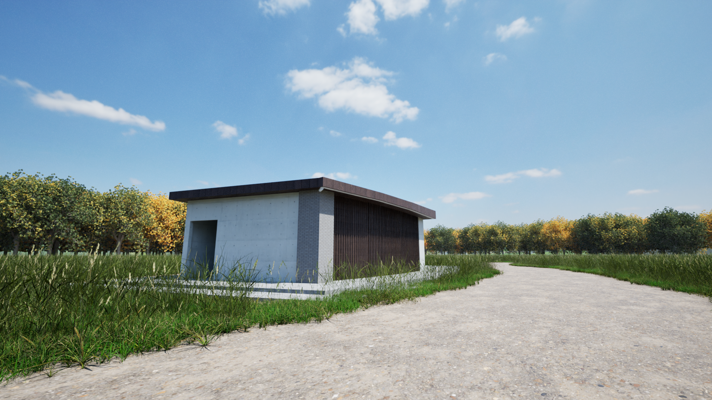
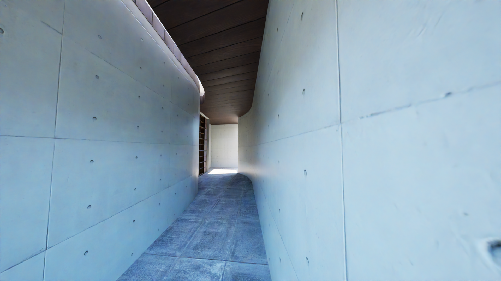
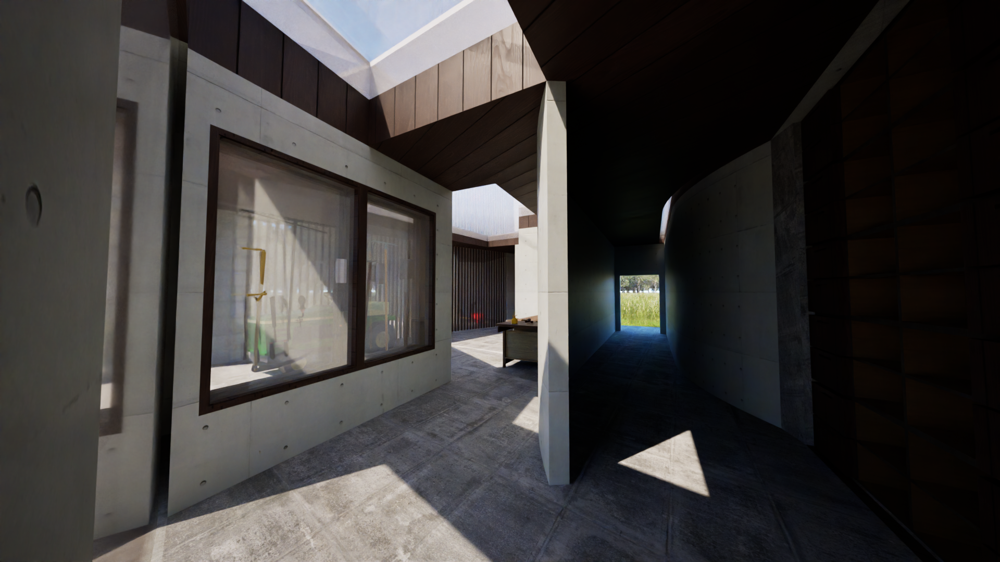
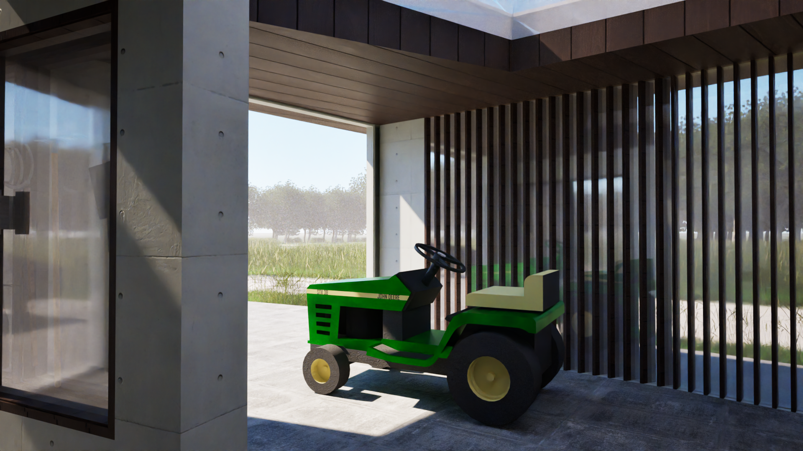
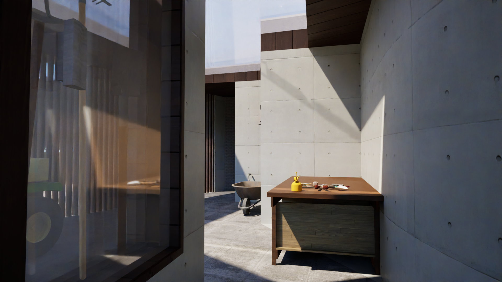
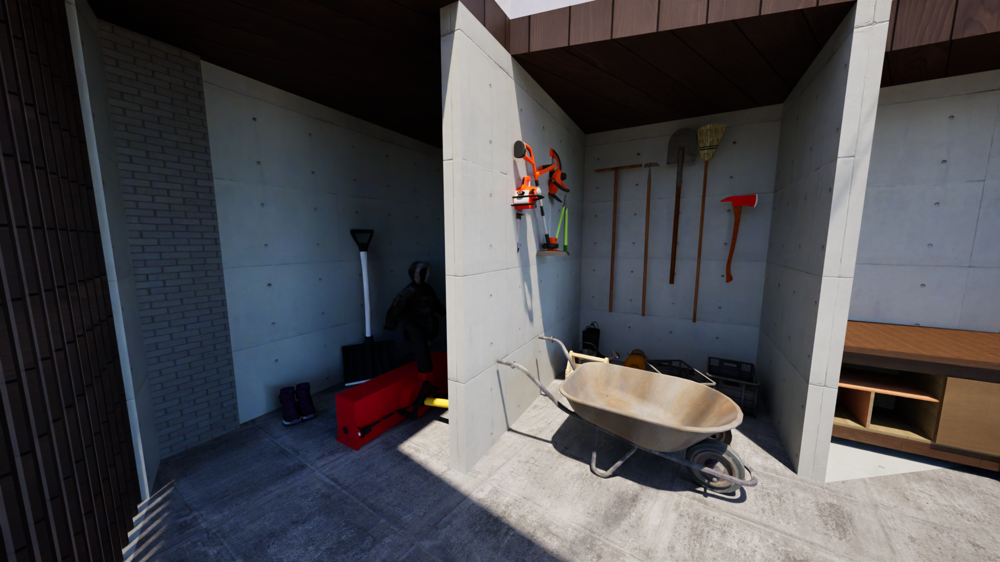
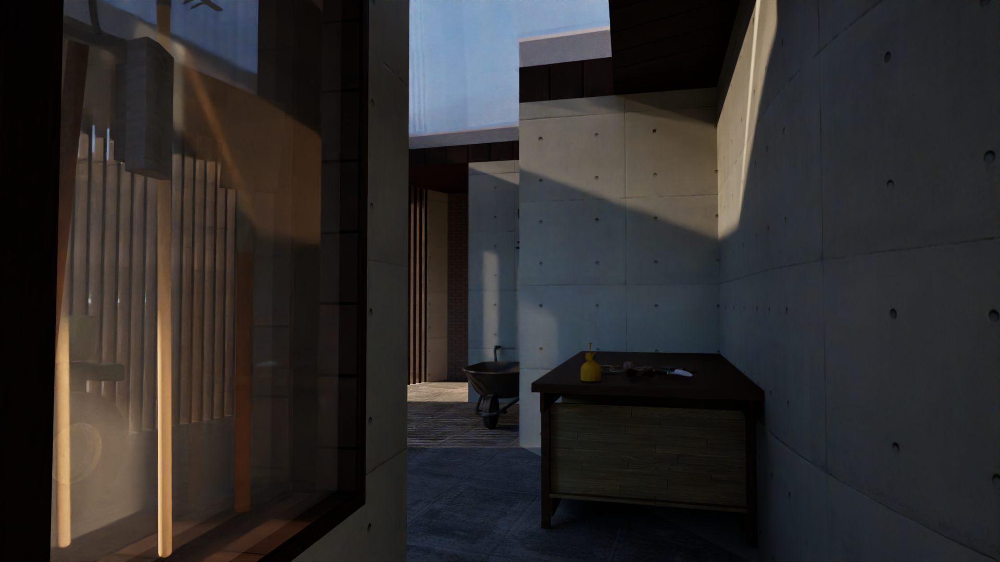
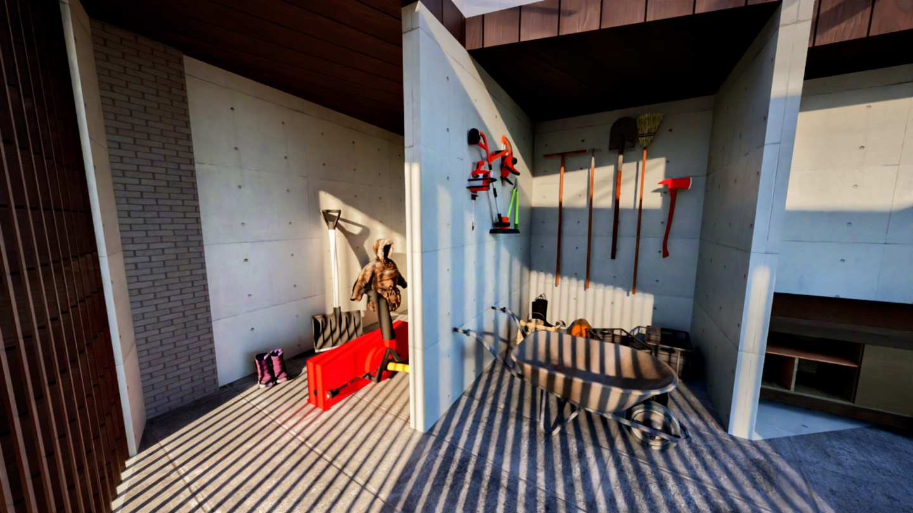
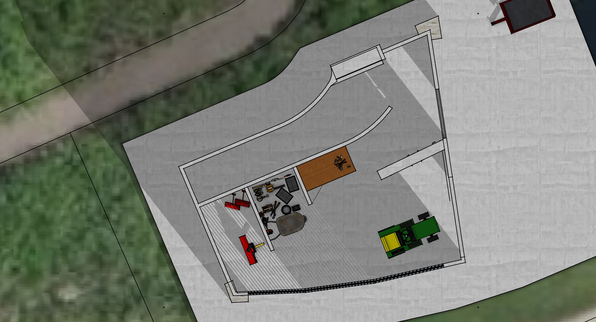

UW-Madison Arboretum Garden Shed
The UW–Madison Arboretum Garden Shed reimagines the conventional shed as a spatial sequence that supports both efficiency and mental clarity. Rather than a cluttered storage space, the design organizes tools through an intuitive layout and guides users through a progression — from a narrow, light-filled entry that encourages focus, to an open workspace with clearly visible storage, and finally to an outward connection with the landscape. Natural light is used as a primary driver, with skylights and louvers strategically directing sunlight to highlight different zones and reinforce orientation. Through simplicity, sequencing, and light, the shed transforms routine utility into a calm and purposeful experience.







 Plan view — Summer light penetration
Plan view — Summer light penetration



Plan view — Winter light penetration